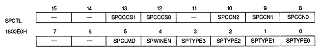

Sprite color calculation condition bit : Sprite color calculation condition bit
| SPCCCS1 | SPCCCS0 | Condition |
| 0 | 0 | (priority number) ≤ (color operation condition number) only |
| 0 | 1 | (priority number) = (color operation condition number) only |
| 1 | 0 | (priority number) ≥ (color calculation condition number) only |
| 1 | 1 | Only when the most significant bit of color data is 1 |
∙ When the color format of the sprite is RGB format, color calculation is always performed if the condition that color calculation is performed only when the most significant bit of the color data is 1.
| SPCLMD | Sprite color data format |
| 0 | All sprite data is in palette format only |
| 1 | Sprite data is a mixture of palette format and RGB format |
∙ Do not specify 1 when the sprite data is 8 bits per dot.